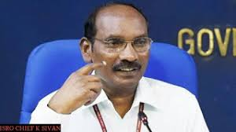
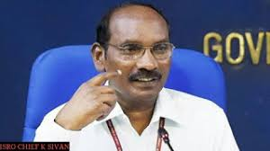
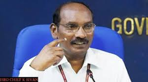

.jpg) 

कैलासवटिवु शिवन् (जन्म : 14 अप्रैल 1957) भारत के एक अन्तरिक्ष वैज्ञानिक हैं और वर्तमान में भारतीय अंतरिक्ष अनुसंधान संगठन के अध्यक्ष हैं। [1][2] इसके पहले वे विक्रम साराभाई अंतरिक्ष केंद्र तथा द्रव प्रणोदन केन्द्र के निदेशक रह चुके हैं।
के। शिवन् का जन्म भारत के तमिलनाडु राज्य के कन्याकुमारी जिले में नागरकोइल के पास मेला सरक्कलविलाई में हुआ था।[4] उनके माता-पिता कैलासावदीवुनादार और चेलमल्ल हैं। शिवन् को भारत के अंतरिक्ष कार्यक्रम के लिए क्रायोजेनिक इंजन के विकास में महत्वपूर्ण योगदान के लिए जाना जाता है।[
"Renowned scientist Sivan K named new ISRO chairman". The Times of India. 10 January 2018. मूल से 10 जनवरी 2018 को पुरालेखित. अभिगमन तिथि 10 January 2018.
"Sivan K named new ISRO chairman". The Economic Times. 10 January 2018. मूल से 11 जनवरी 2018 को पुरालेखित. अभिगमन तिथि 10 January 2018.
"Dr. Sivan takes over as LPSC director". The Hindu. 2 July 2014. मूल से 30 दिसंबर 2015 को पुरालेखित. अभिगमन तिथि 28 May 2016.
"मोदी के गले लगकर रोने वाले इसरो चीफ का ऐसा रहा सफर, कॉलेज में आकर पहली बार पहने थे सैंडल". मूल से 15 सितंबर 2019 को पुरालेखित. अभिगमन तिथि 7 सितंबर 2019.
"A humble farmer's son to Isro's 'Rocket Man': Incredible journey of K Sivan".
